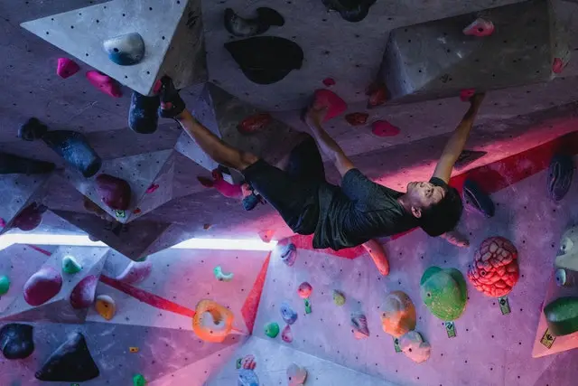

Budowanie Siły Ciała
Treningiem siłowym możemy zmniejszyć ryzyko kontuzji, naprawić balans pomiędzy mięśniami i zwiększyć siłę, co dla wielu osób jest czynnikiem limitującym.
Dla większości wspinaczy trening siły maksymalnej będzie odpowiedni w kontekście budowania siły ciała.
Podstawowy schemat treningu siłowego
Skupimy się na kilku wzorcach ruchowych:
- Push
- Pull
- Squat
- Hip Hinge
Do zbudowania siły maksymalnej będziemy operować przy zakresie powtórzeń od 3-6 co pozwoli dobrać duże obciążenie, ilość serii od 3 do 5 na każdy wzorzec ruchowy.
Przykładowy trening siłowy
- Push - Shoulder Press
- Pull - Podciągnięcie
- Squat - Pistol Squat
- Hip Hinge - Martwy Ciąg
Do takiego treningu dobrą opcją jest dodanie treningu na chwytotablicy, co wiąże się z większym progresem siły palców przez wzrost hormonów przy użyciu ćwiczeń na całe ciało.
Co zrobić jak poczuje stagnację?
Po okresie 4 tygodni warto zmienić ćwiczenia tak, żeby ciało dostawało cały czas nowy bodziec.
Drugi przykład
- Push - Bench Press
- Pull - Row
- Squat - Front Squat
- Hip Hinge - Sumo Deadlift
Jak często?
W zależności od fazy treningu od 1 do 3 treningów tygodniowo.